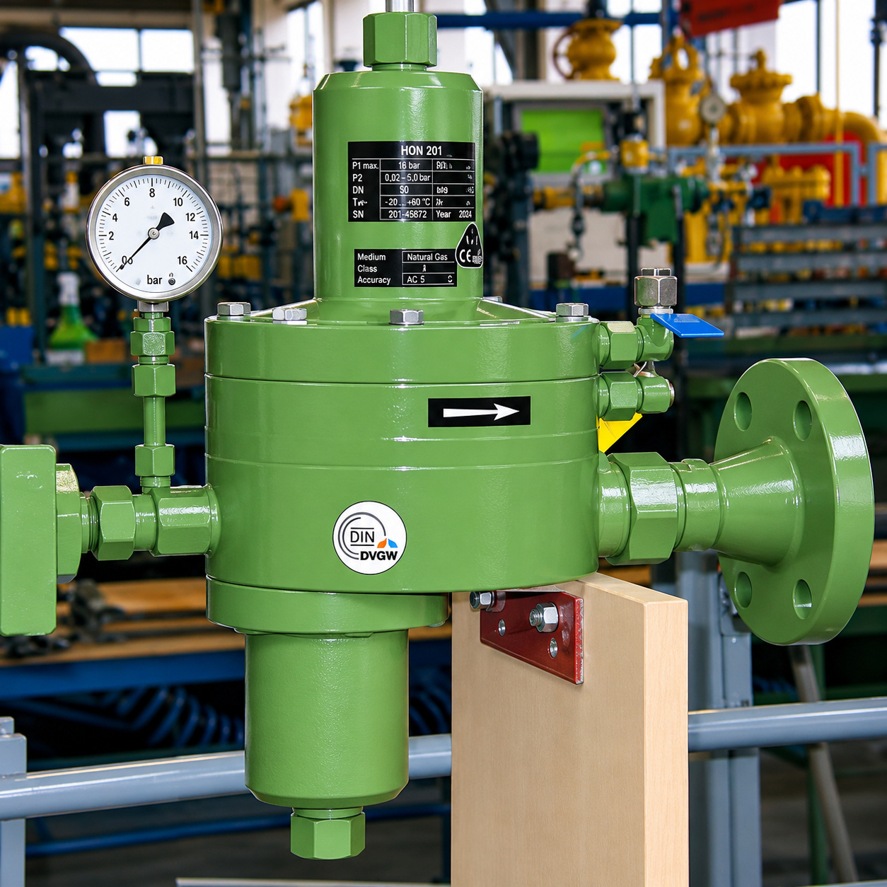

двухступенчатый регулятор давления, предназначенный для поддержания стабильного выходного давления газа при изменении входного давления и расхода. Применяется в промышленных и технологических установках, а также на линиях малой нагрузки газоредуцирующих станций. Подходит для природного и других неагрессивных газов.